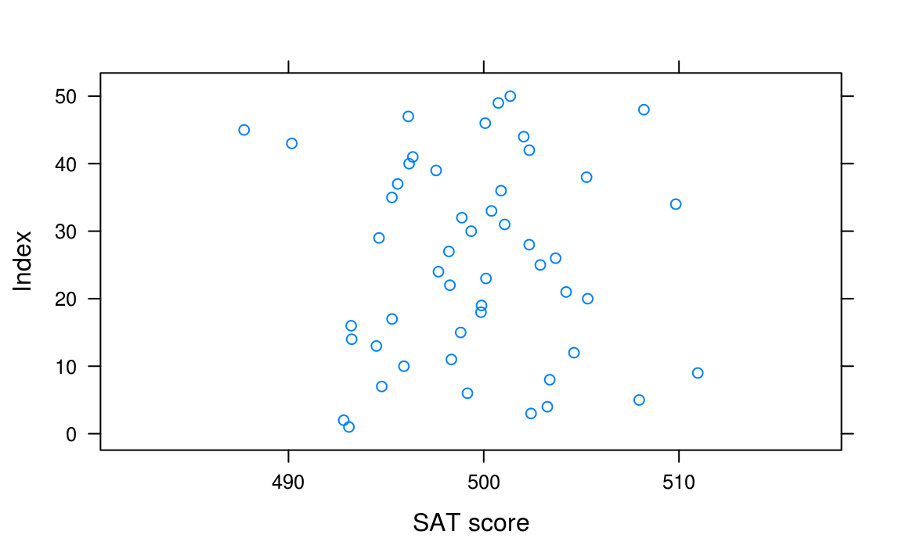
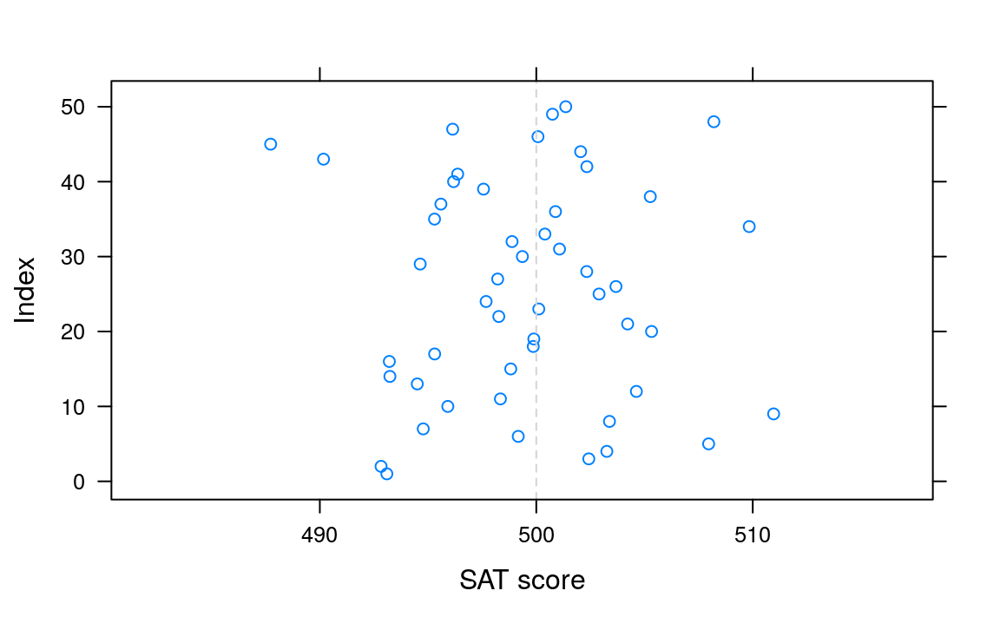
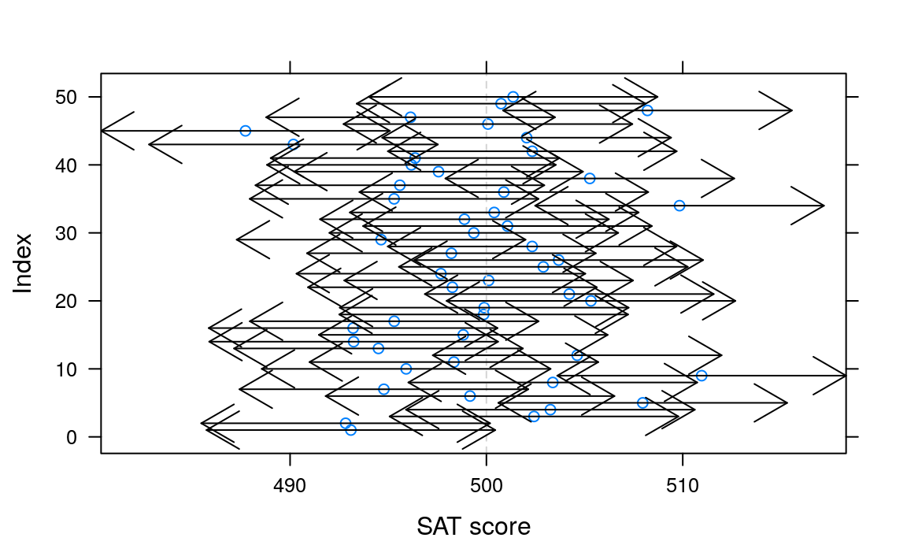

Chapter 10 Icebreakers
10.1 The Lady Tasting Tea
This example is adapted from Start Teaching with R (Pruim, Horton, and Kaplan 2015) and JH notes unit 8_B.
There is a famous story about a lady who claimed that tea with milk tasted different depending on whether the milk was added to the tea or the tea added to the milk. The story is famous because of the setting in which she made this claim. She was attending a party in Cambridge, England, in the 1920s. Also in attendance were a number of university dons and their wives. The scientists in at- tendance scoffed at the woman and her claim. What, after all, could be the difference? All the scientists but one, that is. Rather than simply dismiss the woman’s claim, he proposed that they decide how one should test the claim. The tenor of the conversa- tion changed at this suggestion, and the scientists began to discuss how the claim should be tested. Within a few minutes cups of tea with milk had been prepared and presented to the woman for tasting. At this point, you may be wondering who the innova- tive scientist was and what the results of the experiment were. The scientist was R. A. Fisher, who first described
library(mosaic)
rflip()
#>
#> Flipping 1 coin [ Prob(Heads) = 0.5 ] ...
#>
#> H
#>
#> Number of Heads: 1 [Proportion Heads: 1]rflip(10)
#>
#> Flipping 10 coins [ Prob(Heads) = 0.5 ] ...
#>
#> H T T T T H T T T H
#>
#> Number of Heads: 3 [Proportion Heads: 0.3]mu = 500
sigma = 100
x = rnorm(500, mean=mu, sd=sigma)
favstats(x)
#> min Q1 median Q3 max mean sd n missing
#> 117 431.4 497.4 563.1 811.6 500.2 99.16 500 0
meanconfint = function (x, sigma, level = 0.95, ...) {
se = sigma / sqrt(length(x))
mu = mean(x)
z = qnorm(1 - (1 - level)/2)
out = c(mu, mu - z * se, mu + z * se)
names(out) = c("mean", "lower", "upper")
return(out)
}
meanconfint(x, sigma = sigma)
#> mean lower upper
#> 500.2 491.4 509.0
randomx = do(50) * rnorm(500, mean=mu, sd=sigma)
ci = data.frame(t(apply(randomx, 1, meanconfint, sigma=sigma, level=0.90)))
head(ci, 3)
#> mean lower upper
#> 1 493.1 485.7 500.5
#> 2 492.8 485.5 500.2
#> 3 502.4 495.1 509.8
xyplot(1:nrow(ci) ~ mean, data=ci, xlim=range(ci), xlab="SAT score", ylab="Index")
ladd(panel.abline(v=500, col="lightgray", lty=2))
ladd(with(ci, panel.arrows(x0 = lower, y0=1:nrow(ci), y1=1:nrow(ci), cex=0.5,
x1=upper, code=3)))
head(t(apply(randomx, 1, meanconfint, sigma=sigma, level=0.9)), 3)
#> mean lower upper
#> [1,] 493.1 485.7 500.5
#> [2,] 492.8 485.5 500.2
#> [3,] 502.4 495.1 509.8
T <- chisq(substance ~ shuffle(sex), data = HELPrct); T
#> X.squared
#> 0.07796
Substance.Null <- do(999) * chisq(substance ~ shuffle(sex), data = HELPrct)
histogram( ~ X.squared, data = Substance.Null, v = T, width = 0.25)
prop1( ~(X.squared >= T), data = Substance.Null)
#> prop_TRUE
#> 0.956B Appendix B
Pruim, Randall, Nicholas J Horton, and Daniel T Kaplan. 2015. “Start Teaching with R.” https://github.com/ProjectMOSAIC/LittleBooks/blob/master/Starting/MOSAIC-StartTeaching.pdf.